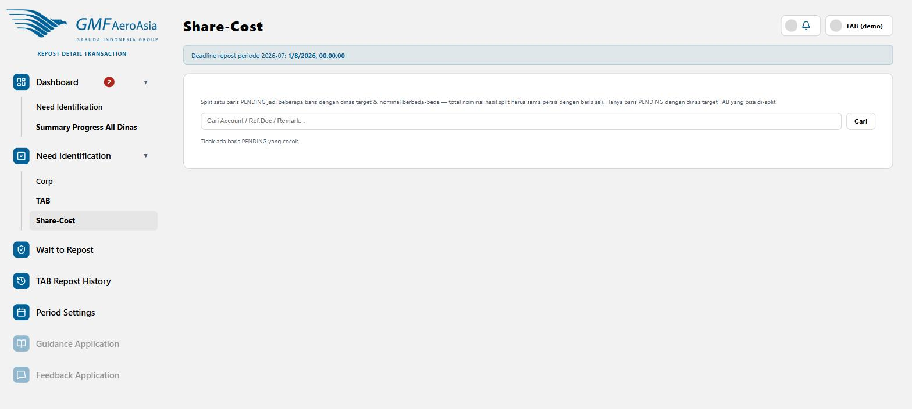

Membelah satu transaksi jadi beberapa dinas target
rdt/share-cost

- Cari baris Pending yang dinas targetnya masih "TAB" lewat kolom pencarian (Account/Ref.Doc/Remark).
- Pilih baris yang ingin dibelah, lalu tentukan beberapa dinas target dengan nominal masing-masing.
- Isi catatan alasan pembelahan (wajib) — catatan ini masuk ke audit trail dan komentar diskusi pasangan dinas asal.
Total nominal hasil split harus sama persis dengan nominal baris asli (dihitung sampai ke sen, bukan pembulatan kasar) — sistem akan menolak submit kalau totalnya meleset walau hanya selisih kecil akibat pembulatan.